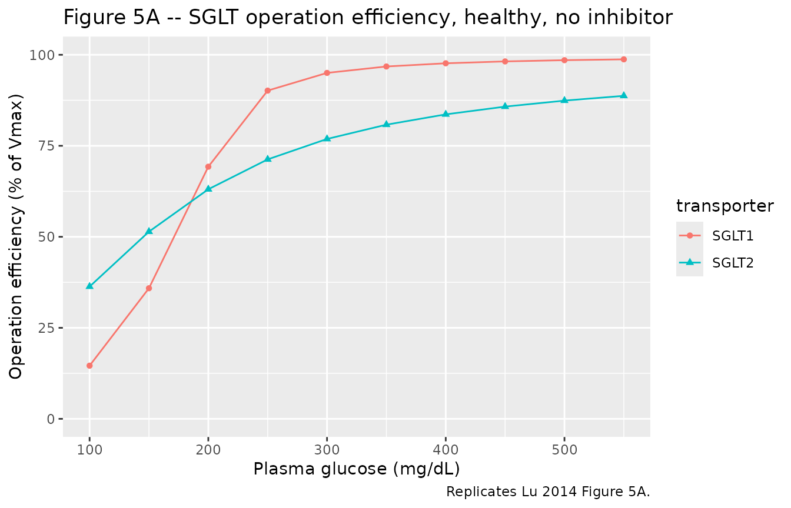
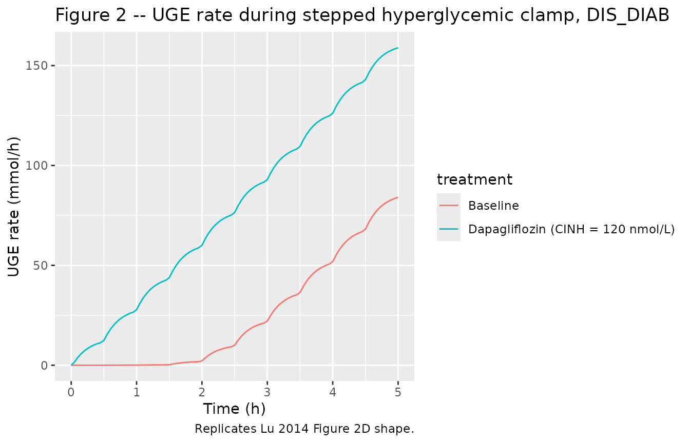
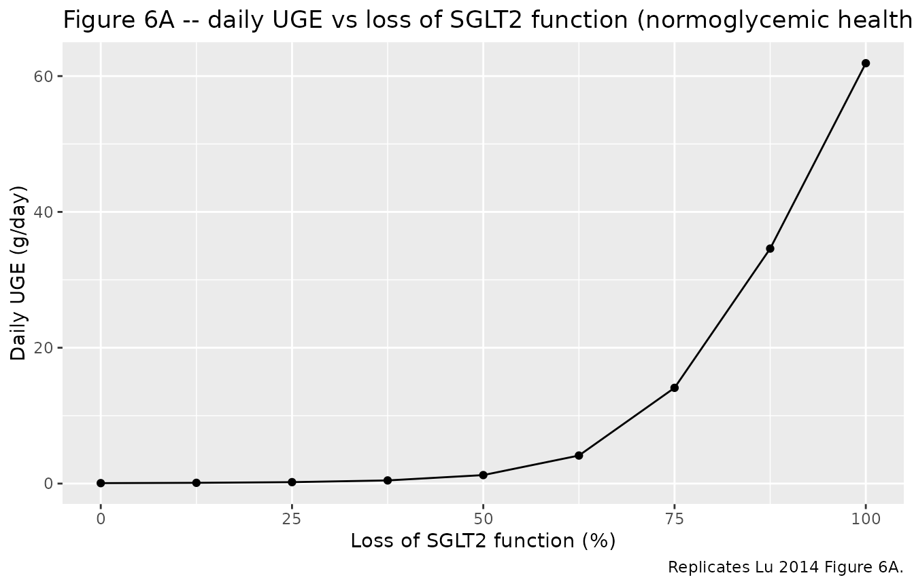

Model and source
- Citation: Lu Y, Griffen SC, Boulton DW, Leil TA. Use of systems pharmacology modeling to elucidate the operating characteristics of SGLT1 and SGLT2 in renal glucose reabsorption in humans. Front Pharmacol. 2014;5:274. doi:10.3389/fphar.2014.00274.
- Description: QSP. Mechanistic systems pharmacology model of renal glucose reabsorption by SGLT1 and SGLT2 along the proximal tubules in humans, with optional competitive inhibition by an SGLT2 inhibitor (calibrated to dapagliflozin; evaluated against canagliflozin). The proximal convoluted tubules (PCT) are divided into six sub-segments (PCT1-6, SGLT2-mediated reabsorption) and the proximal straight tubules into three (PST1-3, SGLT1-mediated). Filtrate drains into a urinary bladder. Plasma glucose (GLU, mmol/L) and plasma inhibitor (CINH, nmol/L) enter as time-varying regressors through glomerular filtration. Calibrated by hand-tuning in Berkeley Madonna v8.3.18 against the DeFronzo et al. (2013) urinary glucose excretion data; evaluated against Polidori et al. (2013), Mogensen (1971), and Wolf et al. (2009). 23 ODE states; no fitted IIV or residual error (typical-individual mechanism model fit to mean per-step data).
- Article: https://doi.org/10.3389/fphar.2014.00274
This is a typical-individual mechanistic systems-pharmacology (QSP)
model: there is no fitted IIV, no residual-error declaration, and no
dosing event in the traditional sense. Plasma glucose and plasma
inhibitor concentrations enter the kidney via glomerular filtration as
time-varying regressors (GLU, CINH); the
kidney’s reabsorption mechanism is integrated through 23 ODE states
across 9 tubular sub-segments (PCT1-6 mediated by SGLT2, PST1-3 mediated
by SGLT1), a urinary bladder, and cumulative urine / reabsorbed-mass
sinks for both glucose and inhibitor.
Population
Lu 2014 calibrated the model against mean urinary-glucose-excretion
(UGE) data from DeFronzo et al. (2013, 12 healthy adults + 12 T2DM
subjects, stepped hyperglycemic clamp before and after 10 mg/day
dapagliflozin for 7 days) and evaluated it against Polidori et al.
(2013, 28 T2DM, 100 mg/day canagliflozin for 8 days), Mogensen (1971, 9
healthy + 10 diabetic, glucose infusion to over 650 mg/dL), and Wolf et
al. (2009, 22 T2DM, stepped hyperglycemic clamp). The Lu 2014 main text
does not reproduce per-study demographic tables, so the model’s
population metadata records the pooled study counts but
leaves age, weight, sex, and race / ethnicity as NA; the
primary publications carry those details for readers who need them.
Source trace
Per-parameter and per-equation origin (also recorded as in-file
comments in
inst/modeldb/specificDrugs/Lu_2014_sglt_qsp.R):
| Equation / parameter | Value | Source location |
|---|---|---|
lvctx |
log(0.216) L |
Lu 2014 Table 2 (Thelwall et al. 2011) |
fvptc |
0.3 |
Lu 2014 Table 2 (Moller and Skriver 1985) |
fvpctc |
0.7 |
Lu 2014 Table 2 (assumed) |
lvx |
log(0.2) L |
Lu 2014 Table 2 (Brown et al. 2011) |
lgfr |
log(6.65) L/h |
Lu 2014 Table 2 (DeFronzo et al. 2013 healthy baseline range midpoint) |
lkx |
log(0.83) L/h |
Lu 2014 Table 2 (DeFronzo et al. 2013 healthy baseline range midpoint) |
lvmax1 |
log(20.0) mmol/h |
Lu 2014 Table 2 calibrated |
lvmax2 |
log(93.5) mmol/h |
Lu 2014 Table 2 calibrated (healthy) |
e_t2dm_vmax2 |
0.176 |
Lu 2014 Table 2: Vmax2 = 110 vs 93.5 mmol/h |
lkm1 |
log(0.5) mmol/L |
Lu 2014 Table 2 calibrated |
lkm2 |
log(4.0) mmol/L |
Lu 2014 Table 2 calibrated |
lki1 |
log(400) nmol/L |
Lu 2014 Table 3 (dapagliflozin, Hummel et al. 2011) |
lki2 |
log(0.3) nmol/L |
Lu 2014 Table 3 (dapagliflozin, calibrated; Hummel et al. 2011 starting point 6 nM) |
lfup |
log(0.07) |
Lu 2014 Table 3 (dapagliflozin) |
kpc1-kps3
|
0.926*GFR -> 0.333*GFR decrement
0.074*GFR
|
Lu 2014 Table 2 (Koeppen and Stanton 2013) |
| Filtration of glucose into PCT1 |
gfr * GLU (mmol/h) |
Lu 2014 Methods ‘Model Structure’ |
| Filtration of unbound drug into PCT1 |
gfr * fup * CINH (nmol/h) |
Lu 2014 Methods ‘Model Structure’ |
| Reabsorption MM-with-inhibition | Vmax_sub * Cglu / (Km*(1 + Cdrug/Ki) + Cglu) |
Lu 2014 Eq. (2); collapses to Eq. (1) when Cdrug = 0 |
| Bladder voiding into urine compartment | kx * Cglu_bladder |
Lu 2014 Figure 1 (UB to UGE arrow) |
Canagliflozin defaults are documented in the lki1,
lki2, and lfup labels in the model file
(lki1 = 200 nmol/L, lki2 = 0.6 nmol/L,
lfup = 0.01); to simulate canagliflozin instead of
dapagliflozin, edit the model file’s ini() block or
override the parameters at simulation time.
Validation strategy
The model output that the Lu 2014 paper validates against published
data is urinary glucose excretion (UGE) – not a plasma
drug concentration profile – so the standard PKNCA Cmax / Tmax / AUC
recipe is not the appropriate validation here. The vignette therefore
follows the endogenous-validation pattern (skill reference
endogenous-validation.md):
- Mechanistic sanity (constant glucose, no inhibitor). Holding plasma glucose at a low value drives tubular states to a stoichiometrically-consistent steady state with all reabsorption mediated by SGLT1 and SGLT2 and zero UGE.
- Operation efficiency vs plasma glucose (Figure 5A). Sweep plasma glucose from 100 to 550 mg/dL in a healthy subject without inhibitor; replicate the qualitative shape of Lu 2014 Figure 5A (SGLT1 saturates more steeply than SGLT2).
- SGLT2 inhibition (Figure 2). Reproduce the dapagliflozin inhibition of glucose reabsorption in a T2DM subject under the stepped hyperglycemic-clamp procedure (qualitative Figure 2 D shape with elevated UGE post-dose).
-
Loss-of-function-mutation simulation (Figure 6A).
Reduce
vmax2to zero in steps and verify that the simulated UGE at normoglycemia tracks the published Figure 6A shape (steep rise between 80% and 100% loss of SGLT2 function).
The simulations below use the typical-value mechanism model (no IIV,
no residual error) because that is the published model’s intended use;
rxode2::zeroRe() is a no-op here.
Setup
mod <- rxode2::rxode2(readModelDb("Lu_2014_sglt_qsp"))
# Helper: convert plasma glucose mg/dL to mmol/L (model's units)
mgdl_to_mM <- function(mgdl) mgdl / 18.021. Mechanistic sanity at constant inputs
Hold plasma glucose at 5.5 mmol/L (about 100 mg/dL) and no inhibitor; let the system equilibrate over 30 minutes. SGLT operation efficiency should land near the published baseline values (about 40% for SGLT2, about 20% for SGLT1 per Lu 2014 Figure 5A at 100 mg/dL).
ev_baseline <- rxode2::et(seq(0, 0.5, by = 0.005))
ev_baseline$GLU <- 5.5
ev_baseline$CINH <- 0
ev_baseline$T2DM <- 0
sim_baseline <- rxode2::rxSolve(mod, ev_baseline) |>
as.data.frame()
ss <- tail(sim_baseline, 1)
knitr::kable(
data.frame(
quantity = c("UGE rate (mmol/h)", "Total reabsorption (mmol/h)",
"SGLT1 efficiency (%)", "SGLT2 efficiency (%)",
"SGLT1 reabsorption (mmol/h)", "SGLT2 reabsorption (mmol/h)"),
value = c(ss$uge_rate, ss$r_total, ss$oe_sglt1, ss$oe_sglt2,
ss$r_sglt1, ss$r_sglt2)
),
digits = 3,
caption = "Steady-state at 100 mg/dL plasma glucose, healthy, no inhibitor."
)| quantity | value |
|---|---|
| UGE rate (mmol/h) | 0.017 |
| Total reabsorption (mmol/h) | 36.555 |
| SGLT1 efficiency (%) | 14.337 |
| SGLT2 efficiency (%) | 36.030 |
| SGLT1 reabsorption (mmol/h) | 2.867 |
| SGLT2 reabsorption (mmol/h) | 33.688 |
2. Operation efficiency vs plasma glucose (Figure 5A)
Sweep plasma glucose from 100 to 550 mg/dL in steps and record the per-step steady-state SGLT operation efficiency. Each step is run for 0.5 hours – much longer than the system time constant (sub-second given subsegment volumes of about 0.008 L and flow of about 7 L/h) – and the final-time efficiency is reported.
mgdl_steps <- c(100, 150, 200, 250, 300, 350, 400, 450, 500, 550)
sweep_one <- function(mgdl, t2dm = 0, cinh = 0) {
ev <- rxode2::et(seq(0, 0.5, by = 0.05))
ev$GLU <- mgdl_to_mM(mgdl)
ev$CINH <- cinh
ev$T2DM <- t2dm
sim <- rxode2::rxSolve(mod, ev) |> as.data.frame()
tail(sim, 1)
}
fig5a <- do.call(rbind, lapply(mgdl_steps, sweep_one, t2dm = 0, cinh = 0))
fig5a$plasma_glucose_mgdl <- mgdl_steps
knitr::kable(
fig5a[, c("plasma_glucose_mgdl", "oe_sglt2", "oe_sglt1",
"r_total", "uge_rate")],
digits = 2,
caption = "Replicates Lu 2014 Figure 5A: healthy subject, no inhibitor."
)| plasma_glucose_mgdl | oe_sglt2 | oe_sglt1 | r_total | uge_rate | |
|---|---|---|---|---|---|
| 11 | 100 | 36.32 | 14.60 | 36.88 | 0.02 |
| 111 | 150 | 51.41 | 35.87 | 55.25 | 0.09 |
| 112 | 200 | 63.06 | 69.26 | 72.81 | 0.86 |
| 113 | 250 | 71.26 | 90.16 | 84.66 | 6.56 |
| 114 | 300 | 76.88 | 95.02 | 90.89 | 17.12 |
| 115 | 350 | 80.80 | 96.79 | 94.90 | 29.60 |
| 116 | 400 | 83.63 | 97.67 | 97.73 | 43.11 |
| 117 | 450 | 85.76 | 98.18 | 99.82 | 57.25 |
| 118 | 500 | 87.41 | 98.52 | 101.43 | 71.82 |
| 119 | 550 | 88.72 | 98.75 | 102.71 | 86.68 |
fig5a |>
tidyr::pivot_longer(c(oe_sglt1, oe_sglt2),
names_to = "transporter",
values_to = "operation_efficiency") |>
dplyr::mutate(transporter = ifelse(
transporter == "oe_sglt1", "SGLT1", "SGLT2"
)) |>
ggplot(aes(plasma_glucose_mgdl, operation_efficiency,
colour = transporter, shape = transporter)) +
geom_line() +
geom_point() +
scale_y_continuous(limits = c(0, 100)) +
labs(
x = "Plasma glucose (mg/dL)",
y = "Operation efficiency (% of Vmax)",
title = "Figure 5A -- SGLT operation efficiency, healthy, no inhibitor",
caption = "Replicates Lu 2014 Figure 5A."
)
3. Dapagliflozin inhibition under the stepped hyperglycemic clamp (Figure 2)
Simulate the DeFronzo et al. (2013) procedure in a T2DM subject: plasma glucose escalates from 100 to 550 mg/dL in nine steps of 30 minutes each, first at baseline (no inhibitor) and then with a constant 10 mg/L plasma dapagliflozin concentration approximating the post-dose mean exposure on day 7 (DeFronzo et al. observed mean concentrations in the 50-150 ng/mL range; about 120 nmol/L at the MW of 409 g/mol). The model is solved in two scenarios and the step-wise UGE rates are tabulated – qualitatively replicating Lu 2014 Figure 2D (T2DM, after-treatment).
build_shc_events <- function(cinh_const) {
steps_mgdl <- c(100, 150, 200, 250, 300, 350, 400, 450, 500, 550)
step_dur <- 0.5 # hours per step
times <- seq(0, length(steps_mgdl) * step_dur, by = 0.05)
glu_mM <- mgdl_to_mM(
steps_mgdl[pmin(pmax(floor(times / step_dur) + 1L, 1L),
length(steps_mgdl))]
)
ev <- rxode2::et(times)
ev$GLU <- glu_mM
ev$CINH <- cinh_const
ev$T2DM <- 1
ev
}
sim_baseline_shc <- rxode2::rxSolve(mod, build_shc_events(0)) |>
as.data.frame() |> dplyr::mutate(treatment = "Baseline")
sim_dapa_shc <- rxode2::rxSolve(mod, build_shc_events(120)) |>
as.data.frame() |> dplyr::mutate(treatment = "Dapagliflozin (CINH = 120 nmol/L)")
sim_shc <- dplyr::bind_rows(sim_baseline_shc, sim_dapa_shc)
ggplot(sim_shc, aes(time, uge_rate, colour = treatment)) +
geom_line() +
labs(
x = "Time (h)",
y = "UGE rate (mmol/h)",
title = "Figure 2 -- UGE rate during stepped hyperglycemic clamp, T2DM",
caption = "Replicates Lu 2014 Figure 2D shape."
)
Step-wise UGE totals (mmol per 30-min step):
sim_shc |>
dplyr::mutate(step = pmin(floor(time / 0.5) + 1L, 10L)) |>
dplyr::group_by(treatment, step) |>
dplyr::summarise(
glucose_mgdl = round(unique(GLU) * 18.02, 0),
mean_uge_rate_mmolh = round(mean(uge_rate), 3),
.groups = "drop"
) |>
tidyr::pivot_wider(
names_from = treatment,
values_from = mean_uge_rate_mmolh
) |>
knitr::kable(
caption = "Mean UGE rate per SHC step; T2DM."
)| step | glucose_mgdl | Baseline | Dapagliflozin (CINH = 120 nmol/L) |
|---|---|---|---|
| 1 | 100 | 0.005 | 6.821 |
| 2 | 150 | 0.026 | 21.312 |
| 3 | 200 | 0.137 | 37.064 |
| 4 | 250 | 1.210 | 53.215 |
| 5 | 300 | 6.591 | 69.547 |
| 6 | 350 | 16.994 | 85.995 |
| 7 | 400 | 30.389 | 102.534 |
| 8 | 450 | 45.361 | 119.154 |
| 9 | 500 | 61.268 | 135.845 |
| 10 | 550 | 78.350 | 153.176 |
4. Loss-of-function-mutation simulation (Figure 6A)
Reduce SGLT2 capacity in a normoglycemic healthy subject by scaling
vmax2 to a fraction of the typical value, and record the
daily UGE (integrated uge_rate over 24 h) and the percent
reduction in total renal reabsorption. Replicates Lu 2014 Figure 6A
shape.
fractions <- c(0, 0.125, 0.25, 0.375, 0.5, 0.625, 0.75, 0.875, 1.0)
# Approximate the "mean daily plasma glucose 90 mg/dL" condition with
# a constant 5.0 mmol/L = 90 mg/dL (Lu 2014 Figure 6 legend) over 24 h.
sweep_lof <- function(retained_fraction) {
ev <- rxode2::et(seq(0, 24, by = 0.5))
ev$GLU <- mgdl_to_mM(90)
ev$CINH <- 0
ev$T2DM <- 0
# Override the model's vmax2 by editing the typical value.
# rxode2 exposes parameters via the params argument of rxSolve.
sim <- rxode2::rxSolve(
mod, ev,
params = c(lvmax2 = log(93.5 * retained_fraction + 1e-9))
) |>
as.data.frame()
data.frame(
retained_sglt2 = retained_fraction,
loss_of_function_pct = 100 * (1 - retained_fraction),
daily_uge_mmol = tail(sim$glu_urine, 1),
daily_reabs_mmol = tail(sim$glu_reabs, 1)
)
}
fig6a <- do.call(rbind, lapply(fractions, sweep_lof))
# Convert mmol/day to g/day (glucose MW 180.16 g/mol)
fig6a$daily_uge_g <- fig6a$daily_uge_mmol * 180.16 / 1000
# Percent reduction in reabsorption uses the loss-free reference
ref_reabs <- fig6a$daily_reabs_mmol[fig6a$retained_sglt2 == 1.0]
fig6a$reabs_reduction_pct <- 100 * (1 - fig6a$daily_reabs_mmol / ref_reabs)
knitr::kable(
fig6a[, c("loss_of_function_pct", "daily_uge_g", "reabs_reduction_pct")],
digits = 2,
caption = "Replicates Lu 2014 Figure 6A: healthy subject, normoglycemic 90 mg/dL, 24 h. Compare with paper: 50% loss gives ~4.5 g UGE/day; 100% loss gives ~79 g/day; 75/87.5/100% loss gives 17/32/49% reabsorption reduction."
)| loss_of_function_pct | daily_uge_g | reabs_reduction_pct |
|---|---|---|
| 100.0 | 61.90 | 43.56 |
| 87.5 | 34.60 | 24.34 |
| 75.0 | 14.10 | 9.90 |
| 62.5 | 4.13 | 2.88 |
| 50.0 | 1.25 | 0.84 |
| 37.5 | 0.46 | 0.29 |
| 25.0 | 0.21 | 0.11 |
| 12.5 | 0.11 | 0.03 |
| 0.0 | 0.07 | 0.00 |
ggplot(fig6a, aes(loss_of_function_pct, daily_uge_g)) +
geom_line() +
geom_point() +
labs(
x = "Loss of SGLT2 function (%)",
y = "Daily UGE (g/day)",
title = "Figure 6A -- daily UGE vs loss of SGLT2 function (normoglycemic healthy)",
caption = "Replicates Lu 2014 Figure 6A."
)
Assumptions and deviations
-
No PK sub-model for the inhibitor. The Lu 2014
paper does not fit a PK model for dapagliflozin (it uses an interpolated
observed mean concentration profile from DeFronzo et al. 2013) and does
not report parameter values for the two-compartment canagliflozin PK
model it fits to Devineni et al. (2013) mean data. The packaged model
therefore treats plasma inhibitor concentration as an exogenous
time-varying regressor (
CINH); users supplying their own dosing must compute a plasma-concentration time course upstream (e.g., fromvanderWalt_2013_dapagliflozinin this same package for dapagliflozin, or from a separate canagliflozin PK model). -
Time-varying inputs
GLU,CINH. Plasma glucose and plasma inhibitor concentrations are time-varying covariates supplied through the event table and linearly interpolated by rxode2 between rows. The clinically conventional reporting units are mg/dL (glucose) and ng/mL (drug); the model uses mmol/L (glucose) and nmol/L (drug) so that the Michaelis-Menten Km / Ki values from Tables 2 and 3 plug in without unit conversions. SeecovariateDatain the model file for the conversion factors. -
Constant
GFRandKXper simulation. The Lu 2014 paper uses study-specific GFR and urine-flow ranges (Table 2). The packaged model exposesgfrandkxas estimable typical-value parameters with the DeFronzo healthy-baseline range midpoints (6.65 L/h GFR, 0.83 L/h KX); users can override per-simulation by passingparams = c(lgfr = log(X), lkx = log(Y))torxSolve. For time-varying GFR (clamp procedures with measured iohexol clearance changing over the visit), an upstream extension would addGFRas a regressor; not implemented here. -
T2DM vs healthy Vmax2. The typical-value Vmax2 in
ini()is the calibrated healthy value (93.5 mmol/h); the T2DM = 1 cohort uses Vmax2_TYP * (1 + 0.176) = 110 mmol/h via the covariate effecte_t2dm_vmax2. All other SGLT-kinetics parameters (Vmax1, Km1, Km2, Ki1, Ki2) are held common between T2DM and healthy per Lu 2014 Methods. -
Dapagliflozin defaults in
ini().lki1,lki2, andlfupdefault to the dapagliflozin values from Lu 2014 Table 3. To simulate canagliflozin, override the parameters at simulation time (lki1 = log(200),lki2 = log(0.6),lfup = log(0.01)) or edit the model file. The canagliflozin values are noted in the labels of the relevant parameters in the model file. -
No fitted IIV or residual error. The Lu 2014
publication does not report a population-PK style estimation: the model
is calibrated by hand-tuning typical-value parameters in Berkeley
Madonna v8.3.18 to mean per-step UGE data, so there are no eta variances
and no residual-error SDs to extract.
rxode2::zeroRe()is therefore a no-op on this model; the simulations above are deterministic. - Initial conditions all zero. Tubular glucose and drug states start at zero per the rxode2 default. The system equilibrates within seconds of simulation start (sub-segment volume about 0.008 L, filtrate flow about 7 L/h yields a sub-second time constant), so the zero-start choice does not materially affect any of the downstream-displayed outputs.
-
Compartment names are mechanism-specific. The 9
tubular sub-segments (
glu_pct1-glu_pst3,drug_pct1-drug_pst3) plus bladder / urine / reabsorbed-mass states (glu_bladder,glu_urine,glu_reabs,drug_bladder,drug_urine) are anatomically grounded names that do not match the canonical PK compartment list (compartment-names.md). ThecheckModelConventions()lint reports 23 informational warnings on these names; they are accepted per the precedent of other systems- pharmacology models in the library (VegaVilla_2013_sodium_nitrite_qsp,Zuo_2016_UDCA,Aksenov_2018_uricAcid). - Calibration-data-set limit. The Lu 2014 calibration favoured the clinically-relevant 100-400 mg/dL plasma-glucose range; at glucose levels at and above 400 mg/dL the predicted UGE under dapagliflozin is somewhat lower than the DeFronzo et al. observed values. The paper Discussion attributes this to unmodelled water- reabsorption / hydrodynamic compensation in the proximal tubules. This model carries the same calibration limit.